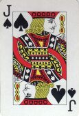

J'fut bin aise d'oué sounné la clioche pour le tée. Y'avait tant d'ponci dans les titheurs a Bella, le linge de s'n'armouethe sentait tant a mouêzi, ses titheurs de ouachstan 'taient di pliens de c'veux mèslès, de vielles bringes a dents, et d'bouëtes a ongent pour la fache, sans conté eunne pannée d'linge sale driethe un ridieau, que j'avais eunne sé!
J'les r'trouvi toutes dans l'parleux. La ousdrive 'tait finie. Tandi qu'tchiq'un 'tait a conté les points pour savé tchi qu'avait gagnyi des prix, la ousemaid - J'vos dit l'aut' jour tchès que ch'tait qu'la ousemaid! Eunne pouore minzethe qui n'a qu'la pé et l'os, les mains enfliés, et la pé d'crapaud viyant qu'ou s'nouorit principalement de vlicots qui lis restent le Samdi au sé. Oul 'tait là ov un serveur chergi d'gache, de beurrées (du beurre de France) et d'tassées d'tée, a faithe le tou d'l'appartement. Hé bin! Nous 'tait tous a grinotté d'la gâche (pas assez tchuite) et a bethe du tée (un shling la livre, j'en gag'ais) et tout l'monde a d'visé, et a s'ent' dithe que "si tuavais joué l'As de Carro sus man Jack de Pique, tuethait forchi Madame Bigthé a copé ov san neuf de Tcheur, et j'ethaimes yeu la prechenne trique" tandi qu'l'autre rèspounnai: "Si Jane Langliais avait entablié Atout a un quart de quatre, Miss Pain n'esthait pas peut "follow suit" et d'même le pasteur n'éthait pas peu sinon dithe 'no trumps.' et d'mème j'ethaimes mértchi sept!"
J'n'y comprennais pon grand chose; mais j'fit tout d'même la r'merque que j'counaissais l'pasteur de longue main; que ch'tait un houmme doux et poaisiblye, et ch'tait pas dans san caractethe de dithe 'no trumps' a persounne - sustout dans un parleux ou-ès qu'y'a des dames.
La d'sus tout l'monde s'mint a me r'gardé: la femme d'un clyincallyi qu'a r'nonchi deux fais s'mint a ritounné: Melia Podêtre - la sienne de tchi nou pasle dans 'People say' - dit que pour quant a lyi ou ne t'nait pas grand compte des gens qui n'pouaient pon joué a ouisdrive; et Bella s'en vint m'dithe que man clioque 'tait pendu driethe la porte du cabinet, et qu'il 'tait siex heuthes un quart. "J'vains d'gaji un schling, qu'ou m'dit a l'othelle, que tu peux marchi d'ichin siez té dans onze minutes: tache de m'faithe gagnyi, et j'te dounnai le schling pour ta collecte! Tu n'ethas qu'faithe de r'venin; nous s'grêtha."
La d'sus, j'mé l'vi. "Ch'est possibye qui y'a des gens qui n'savent pas ouisdrivé, Madame, que j'dit a Melia Podêtre, en la r'gardant d'haut en bas. Mais vous? Pouoraites-ous r'cité les Lamentations d'Jeremie par tcheu? Du coup, ou resti achouêmie, et freumi sa vervette.
"T'en vains tu?" que j'dis a Lonore qu'était d'l'aut' bu parmi un troupé d'femmes qui sembliaient en avé long a lis dithe. Ou n'me rèspounni pon; et quand j'm'appréchi pour vais, j'trouvi ma fille en lermes, etoutes chès hérpies là a la rouâblié viyant qu'oul avait mertchi, sus san papi, pus d'points qu'ou n'avait fait d'triques - a ch'qui disaient.
"Des triques! Des triques!" que j'dit en les boustchullant toutes 'right an left!' "Apprenez que je n'soummes pon des gens a triques, nous, les Pains du "Morning News" et aut' fais des Hautes Crouèx, ou-ès que j'soummes oquo bin counnus pour notr' assiduité ès moyens d'grace! Vins t'en vite hors de Sodome, tandi qu'il en est oquo temps, ma fille." En même temps j'fis sinne a not' pasteur d'avé a s'en v'nin. Il 'tait catinné dans eunne carre sombre, en grande conversation avec Bella qu'etait a lis dithe sa chance dans ses fielles de tée. Mais, l'crethait non jommais! i' n'mé r'gardait sel'ment pas! Et quand j'est fait deux engambées pour lis tappé sus l'èspaule et lis dithe: "we goin' 'ome!" i' n'en bouogi! et resti assis contre Bella en rèsmouant ses fielles de tée ov san p'tit dét sus tchi y'a eunne bague!
"V'la tchès bin, Bella, ma fille!" que j'dit fredment en la r'gardant d'haut en bas: V'la tchès bin! et j'comprends. Tuès a faithe la carre au galant d'ma fille! éspèce de demié-veuve"... qué j'lis fliantchi par la fache! Mais nou se r'trouvtha!
Coumment j'nos r'trouvimes siez nous - et tchès que j'dimes a Piteur quand i' ramonti pour san tée et qui n'trouvi ni feu ni feumme, et nos deux a plieuthé des freddes lermes - je n'sethais vos dithe. Mais chutte Bella!
Mais j'sis bin lien d'conté tout perdu. Coumme je disais a Lonore: J'n'ethais qu'a m'nichi l'pasteur de dithe ès sequestres qu'il a 'té a eunne ouisdrive, pour le r'vaie bin humblye et bin soumis a bethe du tée ov mé et ma Lonore. "Live in 'ope!" coumme dit l'cantique.
Laizé Pain
Morning News 21/1/1914
Viyiz étout: